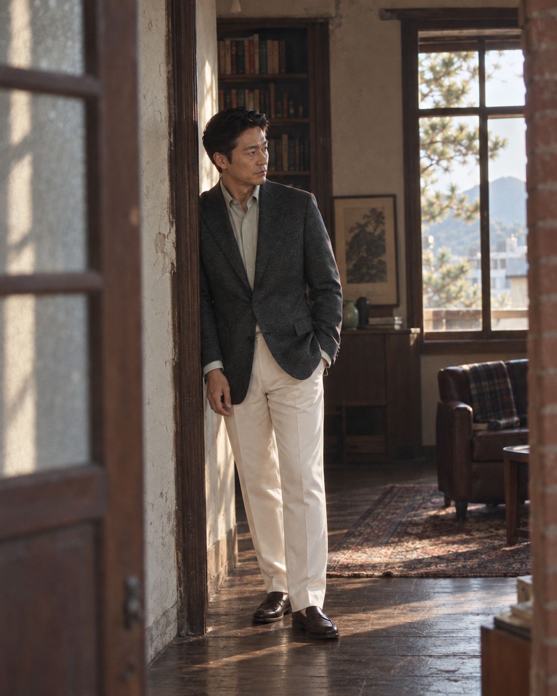

002 RL Purple / S1
13:00 · ENVIRONMENTAL DOCUMENTARY
Arrival
오래된 친구가 대문을 열고 들어오고, 아버지가 계단을 내려와 인사를 시작하며, 아들이 문간에서 돌아보는 첫 장면.

재생성 이유 · 기존 Cut01을 편집해 인물·구도가 끝까지 남았습니다. 다음 버전은 이전 이미지를 입력하지 않고 세 사람의 위치와 행동부터 새로 생성합니다.
| 필수 | 현재 | 다음 수정 |
|---|---|---|
| 친구·아버지·아들 3인 | 1인 | 대문 왼쪽, 인사 중앙, 아들 후면 문간 |
| 도착과 인사 직전 행동 | 문틀에 기대기 | 완성된 악수보다 움직이는 중간 순간 |
| 35mm 전신 환경사진 | 도어웨이 전신 | 길 건너 6m 거리와 전경 대문 기둥 |